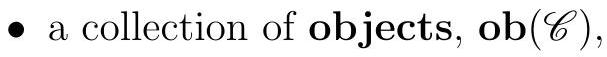

A category consists of a collection of objects and arrows or morphisms between those objects. While these are often sets and some kind of functions between them, beware that this will not always be the case. We will use the words morphism and arrows interchangeably, though arrow has the advantage of reminding us we are not necessarily talking about functions.
Definition1.1.1.
Definition 1.1. A category \(\mathscr{C}\) consists of three different pieces of data:

for each two objects, say \(A\) and \(B\text{,}\) a collection \(\operatorname{Hom}_{\mathscr{C}}(A, B)\) of arrows or morphisms from \(A\) to \(B\text{,}\) and
for each three objects \(A, B\text{,}\) and \(C\text{,}\) a composition
\begin{equation*}
\begin{gathered}
\operatorname{Hom}_{\mathscr{C}}(A, B) \times \operatorname{Hom}_{\mathscr{C}}(B, C) \longrightarrow \operatorname{Hom}_{\mathscr{C}}(A, C) . \\
(f, g) \longmapsto g \circ f
\end{gathered}
\end{equation*}
We will often drop the \(\circ\) and write simply \(g f\) for \(g \circ f\text{.}\)
These ingredients satisfy the following axioms:
The \(\operatorname{Hom}_{\mathscr{C}}(A, B)\) are all disjoint. In particular, if \(f\) is an arrow in \(\mathscr{C}\text{,}\) we can talk about its source \(A\) and its target \(B\) as the objects such that \(f \in \operatorname{Hom}_{\mathscr{C}}(A, B)\text{.}\)
For each object \(A\text{,}\) there is an identity arrow \(1_{A} \in \operatorname{Hom}_{\mathscr{C}}(A, A)\) such that \(1_{A} \circ f=f\) and \(g \circ 1_{A}=g\) for all \(f \in \operatorname{Hom}_{\mathscr{C}}(B, A)\) and all \(g \in \operatorname{Hom}_{\mathscr{C}}(A, B)\text{.}\)
Composition is associative: \(f \circ(g \circ h)=(f \circ g) \circ h\) for all appropriately chosen arrows.
Convention1.1.2.
Notation 1.2. We sometimes write \(f: A \rightarrow B\) or \(A \stackrel{f}{\rightarrow} B\) for an arrow \(f \in \operatorname{Hom}(A, B)\text{.}\)
Exercise 1. Prove that every element in a category has a unique identity morphism.
Here are some categories you have likely encountered before:
Example1.1.3.
The category Set with objects all sets and arrows all functions between sets.
The category Grp whose objects are the collection of all groups, and whose arrows are all the homomorphisms of groups. The identity arrows are the identity homomorphisms.
The category \(\mathbf{A b}\) with objects all abelian groups, and arrows the homomorphisms of abelian groups. The identity arrows are the identity homomorphisms.
The category Ring of rings and ring homomorphisms. Contrary to what you may expect, this is not nearly as important as the next one.
The category \(R\)-mod of modules over a fixed \(\operatorname{ring} R\) and with \(R\)-module homomorphisms. Sometimes one writes \(R\)-Mod for this category, and reserve \(R\)-mod for the category of finitely generated \(R\)-modules with \(R\)-module homomorphisms. When \(R=k\) is a field, the objects in the category \(k\)-Mod are \(k\)-vector spaces, and the arrows are linear transformations; we may instead refer to this category as Vect- \(k\text{.}\)
The category Top of topological spaces and continuous functions. One may consider many variations of the categories above. Here are some variations on vector spaces:
Example1.1.4.
Example 1.4. Let \(k\) be a field.
The collection of finite dimensional \(k\)-vector spaces with all linear transformations is a category.
The collection of all \(n\)-dimensional \(k\)-vector spaces with all linear transformations is a category.
The collection of all \(k\)-vector spaces (or \(n\)-dimensional vector spaces) with linear isomorphisms is a category.
The collection of all \(k\)-vector spaces (or \(n\)-dimensional vector spaces) with nonzero linear transformations is not a category, since it is not closed under composition.
The collection of all \(n\)-dimensional vector spaces with linear transformations of determinant 0 is not a category, since it does not have identity maps.
Here is an important variation of Set:
Example1.1.5.
Example 1.5. There is a category Set* of pointed sets, where the objects are pairs \((X, x)\) of sets \(X\) and points \(x \in X\text{,}\) and where for two pointed sets \((X, x)\) and \((Y, y)\text{,}\) the morphisms from \((X, x)\) to \((Y, y)\) are functions \(f: X \rightarrow Y\) such that \(f(x)=y\text{,}\) with the usual composition of functions.
While the collections of objects and arrows might not actually be sets, sometimes they are.
Definition1.1.6.
Definition 1.6. A category \(\mathscr{C}\) is locally small if for all objects \(A\) and \(B\) in \(\mathscr{C}, \operatorname{Hom}_{\mathscr{C}}(A, B)\) is a set. A category \(\mathscr{C}\) is small if it is locally small and the collection of all objects in \(\mathscr{C}\) is a set.
In fact, one can define a small category as one where the collection of all arrows is a set. It follows immediately that the collection of all objects is also a set, since it must be a subset of the set of arrows - for each object, there is an identity arrow.
Many important categories are at least locally small. For example, Set is locally small but not small. In a locally small category, we can now refer to its Hom-sets.
Categories where the objects are sets with some extra structure and the arrows are some kind of functions between the objects are called concrete. Not all categories are concrete.
Example1.1.7.
Example 1.7. Given a partially ordered set \((X, \leqslant)\text{,}\) we can regard \(X\) itself as a category: the objects are the elements of \(X\text{,}\) and for each \(x\) and \(y\) in \(X, \operatorname{Hom}_{X}(x, y)\) is either a singleton if \(x \leqslant y\) or empty if \(x \neq y\text{.}\) There is only one possible way to define composition, and the transitive property of \(\leqslant\) guarantees that the composition of arrows is indeed well-defined: if there is an arrow \(i \rightarrow j\) and an arrow \(j \rightarrow k\text{,}\) then \(i \leqslant j\) and \(j \leqslant k\text{,}\) so \(i \leqslant k\) and thus there is a unique arrow \(i \rightarrow k\text{.}\) This category is clearly locally small, since all nonempty Hom-sets are in fact singletons. It is in fact small, since the objects are by construction the set \(X\text{.}\) Example 1.8. For each positive integer \(n\text{,}\) the category \(\mathbf{n}\) has \(n\) objects \(0,1, \ldots, n-1\) and \(\operatorname{Hom}(i, j)\) is either empty if \(i>j\) or a singleton if \(i \leqslant j\text{.}\) As Example 1.7, composition is defined in the only way possible, and things work out. This is the poset category for the poset \((\{0,1, \ldots, n-1\}, \leqslant)\) with the usual \(\leqslant\text{.}\)
Example1.1.8.
Example 1.9. Fix a field \(k\text{.}\) We define a category Mat- \(k\) with objects all positive integers, and given two positive integers \(a\) and \(b\text{,}\) the \(\operatorname{Hom}\)-set \(\operatorname{Hom}(a, b)\) consists of all \(b \times a\) matrices with entries in \(k\text{.}\) The composition rule is given by product of matrices: given \(A \in \operatorname{Hom}(a, b)\) and \(B \in \operatorname{Hom}(b, c)\text{,}\) the composition \(B \circ A\) is the matrix \(B A \in \operatorname{Hom}(a, c)\text{.}\) For each object \(a\text{,}\) its identity arrow is given by the \(a \times a\) identity matrix.
Example1.1.9.
Example 1.10. Let \(G\) be a directed graph. We can construct a category from \(G\) as follows: the objects are the vertices of \(G\text{,}\) and the arrows are directed paths in the graph \(G\text{.}\) In this category, composition of arrows corresponds to concatenation of paths. For each object \(A\text{,}\) the identity arrow corresponds to the empty path from \(A\) to \(A\text{.}\)
Remark1.1.10.
Remark 1.11. A locally small category with just one element is completely determined by its unique Hom-set; it thus consists of a set \(S\) with an associative operation that has an identity element, which in this class is what we call a semigroup.  1 
A key insight we get from category theory is that many important concepts can be understood through diagrams. Homological algebra is in many ways the study of commutative diagrams. One way to formalize what a diagram is involves talking about functors, which we will discuss in Section 1.2; here is a more down to earth definition.
Definition1.1.11.
Definition 1.12. A diagram in a category \(\mathscr{C}\) is a directed multigraph whose vertices are objects in \(\mathrm{C}\) and whose arrows/edges are morphisms in \(\mathscr{C}\text{.}\) A commutative diagram in \(\mathscr{C}\) is a diagram in which for each pair of vertices \(A\) and \(B\text{,}\) any two paths from \(A\) to \(B\) compose to the same morphism.
Example1.1.12.
Example 1.13. The diagram
commutes if and only if \(g f=v u\text{.}\)
There are some special types of arrows we will want to consider.
Definition1.1.13.
Definition 1.14. Let \(\mathscr{C}\) be any category.
An arrow \(f \in \operatorname{Hom}_{\mathscr{C}}(A, B)\) is left invertible if there exists \(g \in \operatorname{Hom}_{\mathscr{C}}(B, A)\) such that \(g f=1_{A}\text{.}\) In this case, we say that \(g\) is the left inverse of \(f\text{.}\) So \(g\) is a left inverse of \(f\) if the diagram
commutes.
- An arrow \(f \in \operatorname{Hom}_{\mathscr{C}}(A, B)\) is right invertible if there exists \(g \in \operatorname{Hom}_{\mathscr{C}}(B, A)\) such that \(f g=1_{B}\text{.}\) In this case, we say that \(g\) is the right inverse of \(f\text{.}\) So \(g\) is a right inverse of \(f\) if the diagram
commutes.
An arrow \(f \in \operatorname{Hom}_{\mathscr{C}}(A, B)\) is an isomorphism if there exists \(g \in \operatorname{Hom}_{\mathscr{C}}(B, A)\) such that \(g f=1_{A}\) and \(f g=1_{B}\text{.}\) Unsurprisingly, such an arrow \(g\) is called the inverse of \(f\text{.}\)
An arrow \(f \in \operatorname{Hom}(B, C)\) is monic, a monomorphism, or a mono if for all arrows
\begin{equation*}
A \stackrel{g_{1}}{\underset{g_{2}}{\longrightarrow}} B \stackrel{f}{\longrightarrow} C
\end{equation*}
if \(f g_{1}=f g_{2}\) then \(g_{1}=g_{2}\text{.}\)
Similarly, an arrow \(f \in \operatorname{Hom}(A, B)\) is an epi or an epimorphism if for all arrows
\begin{equation*}
A \stackrel{f}{\longrightarrow} B \underset{g_{2}}{\stackrel{g_{1}}{\longrightarrow}} C
\end{equation*}
if \(g_{1} f=g_{2} f\) then \(g_{1}=g_{2}\text{.}\)
Exercise 2. Show that in Set, the monos coincide with the injective functions and the epis coincide with the surjective functions.
Example1.1.14.
a) In Grp, Ring, and R-Mod the isomorphisms are the morphisms that are bijective functions.
b) In contrast, in Top the isomorphisms are the homeomorphisms, which are the bijective continuous functions with continuous inverses. These are not the same thing as just the bijective continuous functions.
Exercise 4 . Show that the usual inclusion \(\mathbb{Z} \longrightarrow \mathbb{Q}\) is an epi in the category Ring.
This should feel weird: it says being epi and being surjective are not the same thing. Similarly, being monic and being injective are not the same thing.
Exercise 5. Show that the canonical projection \(\mathbb{Q} \longrightarrow \mathbb{Q} / \mathbb{Z}\) is a mono in the category of divisible abelian groups.  2 
Exercise 6. Show that given any poset \(P\text{,}\) in the poset category of \(P\) every morphism is both monic and epic, but no nonidentity morphism has a left or right inverse.
There are some special types of objects we will want to consider.
Definition1.1.15.
Definition 1.16. Let \(\mathscr{C}\) be a category. An initial object in \(\mathscr{C}\) is an object \(i\) such that for every object \(x\) in \(\mathscr{C}, \operatorname{Hom}_{\mathscr{C}}(i, x)\) is a singleton, meaning there exists a unique arrow \(i \longrightarrow x\text{.}\) A terminal object in \(\mathscr{C}\) is an object \(t\) such that for every object \(x\) in \(\mathscr{C}, \operatorname{Hom}_{\mathscr{C}}(x, t)\) is a singleton, meaning there exists a unique arrow \(x \longrightarrow t\text{.}\) A zero object in \(\mathscr{C}\) is an object that is both initial and terminal.
Exercise 7. Initial objects are unique up to unique isomorphism. Terminal objects are unique up to unique isomorphism.
So we can talk about the initial object, the terminal object, and the zero object, if they exist.
Example1.1.16.
a) The empty set is initial in Set. Any singleton is terminal. Since the empty set and a singleton are not isomorphic in Set, there is no zero object in Set.
b) The 0 module is the zero object in \(R\)-mod.
c) The trivial group \(\{e\}\) is the zero object in Grp.
d) In the category of rings, \(\mathbb{Z}\) is the initial object, but there is no terminal object unless we allow the 0 ring.
e) There are no initial nor terminal objects in the category of fields.
We will now continue to follow a familiar pattern and define the related concepts one can guess should be defined.
Definition1.1.17.
Definition 1.18. A subcategory \(\mathscr{C}\) of a category \(\mathscr{D}\) consists of a subcollection of the objects of \(\mathscr{D}\) and a subcollection of the morphisms of \(\mathscr{D}\) such that the following hold:
For every object \(C\) in \(\mathscr{C}\text{,}\) the arrow \(1_{C} \in \operatorname{Hom}_{\mathscr{D}}(C, C)\) is an arrow in \(\mathscr{C}\text{.}\)
For every arrow in \(\mathscr{C}\text{,}\) its source and target in \(\mathscr{D}\) are objects in \(\mathscr{C}\text{.}\)
For every pair of arrows \(f\) and \(g\) in \(\mathscr{C}\) such that \(f g\) is an arrow that makes sense in \(\mathscr{D}\text{,}\)\(f g\) is an arrow in \(\mathscr{C}\text{.}\)
In particular, \(\mathscr{C}\) is a category in its own right.
Example1.1.18.
Example 1.19. The category of finitely generated \(R\)-modules with \(R\)-module homomorphisms is a subcategory of \(R\)-Mod.
Definition1.1.19.
Definition 1.20. A subcategory \(\mathscr{C}\) of \(\mathscr{D}\) is a full subcategory if \(\mathscr{C}\) includes all of the arrows in \(\mathscr{D}\) between any two objects in \(\mathscr{C}\text{.}\)
Example1.1.20.
a) The category \(\mathbf{A b}\) of abelian groups is a full subcategory of Grp.
b) Since every group is a set, and every homomorphism is a function, Grp is a subcategory of Set. However, not every function between two groups is a group homomorphism, so Grp is not a full subcategory of Set.
c) The category whose objects are all sets and with arrows all bijections is a subcategory of Set that is not full.
Here is another way of constructing a new category out of an old one.
Definition1.1.21.
Definition 1.22. Let \(\mathscr{C}\) be a category. The opposite category of \(\mathscr{C}\text{,}\) denoted \(\mathscr{C}\) op, is a category whose objects are the objects of \(\mathscr{C}\text{,}\) and such that each arrow \(f \in \operatorname{Hom}_{\mathscr{C} \text { op }}(A, B)\) is the same as some arrow in \(\operatorname{Hom}_{\mathscr{C}}(B, A)\text{.}\) The composition \(f g\) of two morphisms \(f\) and \(g\) in \(\mathscr{C}^{\text {op }}\) is defined as the composition \(g f\) in \(\mathscr{C}\text{.}\)
Many objects and concepts one might want to describe are obtained from existing ones by flipping the arrows. Opposite categories give us the formal framework to talk about such things. We will often want to refer to dual notions, which will essentially mean considering the same notion in a category \(\mathscr{C}\) and in the opposite category \(\mathscr{C}^{\mathrm{op}}\text{;}\) in practice, this means we should flip all the arrows involved. We will see examples of this later on.
The dual category construction gives us a formal framework to talk about dual notions. We will often make a statement in a category \(\mathscr{C}\) and make comments about the dual statement; in practice, this corresponds to simply switching the way all arrows go. Here are some examples of dual notions and statements:
Table1.1.22.
source
target
epi
mono
\(g\) is a right inverse for \(f\)
\(g\) is a left inverse for \(f\)
\(f\) is invertible
\(f\) is invertible
initial objects
terminal objects
homology
cohomology
Note that the dual of the dual is the original statement; we can make this more formal by saying that \(\left(\mathscr{C}^{\mathrm{op}}\right)^{\text {op }}=\mathscr{C}\text{.}\) Sometimes we can easily prove a statement by dualizing; however, this is not always straightforward, and one needs to carefully dualize all portions of the statement in question. Nevertheless, Sanders MacLane, one of the fathers of category theory, wrote that "If any statement about a category is deducible from the axioms for a category, the dual statement is likely deducible" [Mac50]. One of the upshots of duality is that any theorem in category theory must simultaneously prove two theorems: the original statement and its dual. But for this to hold, we need proofs that use the abstraction of a purely categorical proof.
Opposite categories are more interesting than they might appear at first; there is more than just flipping all the arrows. For example, consider the opposite category of Set. For any nonempty set \(X\text{,}\) there is a unique morphism in Set (a function) \(i: \emptyset \rightarrow X\text{,}\) but there are no functions \(X \rightarrow \emptyset\text{,}\) so \(i^{\text {op }}: \emptyset \rightarrow X\) is not a function. Thus thinking about Set \({ }^{\text {op }}\) is a bit difficult. One can show that this is the category of complete atomic Boolean algebras - but we won’t concern ourselves with what that means.
Some authors prefer the term monoid.
An abelian group \(A\) is divisible if for every \(a \in A\) and every positive integer \(n\) there exists \(b \in A\) such that \(n b=a\text{.}\)

.jpg)